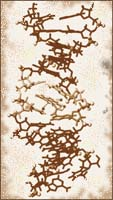
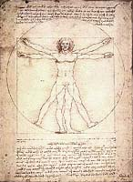
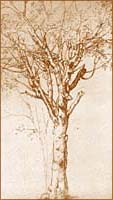
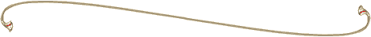

SMOOT Surname Y-DNA Project
Introduction



Smoot ~ Smute ~ Smoote
Smoots ~ Smout ~ &c.

Project Background:
The Smoot surname in America starts with William Smute, born about 1596 in England.
Although the name is thought to be Dutch in origin, the original William Smute came
from England as a boatwright after 1630. Through the study of the Y-DNA of his male descendants,
we may be able to determine not only his direct descendants but also the origins of the name Smoot.
Project Goals & Objectives:
1. The primary objective of this project is to identify the key DNA markers for the Smoot surname
and to determine differences between various branches of descendants.
2. To identify the origins of the Smoot surname.
3. To assist those people who have been unable to make a direct
connection to the Smoot line using the traditional genealogical resources.
4. To develop a network of participants who will:
Become DNA donors
Contribute to the Smoot research
Contribute toward the cost of DNA testing
Provide analysis of DNA results
Much More :
Why Do DNA Testing?
The Testing Process
Test Results
How To Participate
Personal Contact
|
|